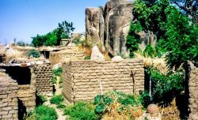

Village de koro

Situé à une dizaine de kilomètres à l'est de la ville de Bobo-Dioulasso, il est implanté sur une colline rocheuse à 3km à droite sur l'axe Bobo-Ouagadougou. La population de Koro composée de Bobo,Dioula,Peulh et Bobo-Dioula est chiffrée à environ 30000 habitants.Le village est scindé en 3 parties:une partie paysanne,la poterie et la forge.Les paysans s'occupent de la culture pendant toute la période d'hivernage et ne le villagequ'au terme des activités agricoles.Les forgeronsfournissent les outils artisanaux ou agricoles necessaires aux paysans.
Le paysage magnifique saura vous émerveiller,d'énormes blocs de granit avec une vue spectaculaire.Un trekking vous permettra non seulement de savourer le merveilleux paysage mais aussi d'admirer le coucher du soleil.
Une expérience unique à vivre absolument.